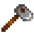

Werkzeuge
Werkzeuge unterstützen den Spieler dabei, Aufgaben und Arbeiten zu verrichten. Sie können entweder im Rucksack getragen oder in einer Kiste aufbewahrt werden, wenn sie nicht benötigt werden.
Verbesserung
Man kann Werkzeuge beim Schmied im Tausch für Gold und Metallbarren verbessern, wobei eine Verbesserung 2 Tage dauert. Während der Verbesserung kann man bei Clint weder etwas kaufen noch Geoden aufbrechen. Werkzeuge müssen in aufsteigender Reihenfolge der Materialien aufgerüstet werden; z. B. kann ein Kupferwerkzeug nicht direkt auf Iridium aufgerüstet werden.
Tipp: Die praktische Bedeutung eines Upgrades, das "zwei Tage dauert", besteht darin, dass man an zwei aufeinanderfolgenden Tagen ohne sein Werkzeug aufwacht. Man kann das Werkzeug tagsüber benutzen und es dann zum Schmied bringen (bevor er schließt), um das Upgrade durchzuführen. Am nächsten Tag ist man ohne sein Werkzeug. Am darauf folgenden Tag sollte man zum Schmied fahren, um das Werkzeug abzuholen und es für den Rest des Tages nutzen zu können.
Effektivität
Die Fähigkeiteneffektivität beeinflusst die Menge an Energie, die für die Nutzung eines bestimmten Werkzeugs gebraucht wird. Jede Steigerung der Fähigkeiten senkt den Energiebedarf für spezifische Werkzeuge um 0,1 Punkte. (Das Spiel behält den Überblick über Energiebruchteile, aber in der Benutzeroberfläche werden sie auf die nächste ganze Zahl gerundet.)
Auf Fähigkeiten-Stufe 0 verbraucht jede Spitzhacke, Axt und Hacke 2 Energie. Jede Angelrute verbraucht 8 Energie. Die Startergießkanne verbraucht 2 Energie.
Das vollständige Aufladen einer aufgerüsteten Gießkanne kann die Energiekosten um 2 Punkte pro Aufrüstung erhöhen, aber jede Erhöhung der Fähigkeiten verringert diesen Energiebedarf um weitere 0,1 Punkte pro Aufrüstung. Bei Hofarbeit Stufe 0 verbraucht die Startergießkanne 2 Energie und die Iridiumkanne 10 Energie. Bei Hofarbeit Stufe 10 kann die Startergießkanne 1 Energie verbrauchen, und die Iridiumgießkanne verbraucht 9 Energie (10 minus 0,1 pro Fertigkeitsstufe). Die Verwendung einer aufgerüsteten Gießkanne zum Bewässern einer Kachel kostet die gleiche Energie wie die Startergießkanne. Der Versuch, eine leere Gießkanne zu verwenden, kostet keine Energie. Das Füllen einer Gießkanne verbraucht niemals Energie.
Das Aufrüsten einer Axt, Spitzhacke oder Hacke verringert nicht die Menge an Energie, die für die Benutzung benötigt wird. Die höhere Effizienz der Axt, Spitzhacke oder Hacke führt jedoch dazu, dass insgesamt weniger Energie für die gleiche Aufgabe verbraucht wird als bei einem Werkzeug auf niedrigerer Ebene.
Beachte, dass alle Hacken die gleiche Energie verbrauchen (2 Punkte auf Hofarbeit Stufe 0 und 1 Punkt auf Hofarbeit Stufe 10), egal ob sie voll geladen sind oder zur Bearbeitung nur einer Kachel verwendet werden.
Alle Angelruten verbrauchen die gleiche Energie: 8 Punkte auf Fischen Stufe 0 und 7 Punkte auf Fischen Stufe 10.
Betroffene WerkzeugeHofarbeit Sammeln Fischen Minenarbeit |
Nicht betroffene WerkzeugeDie folgenden Werkzeuge verbrauchen bei Benutzung keine Energie: Die folgenden Werkzeuge verbrauchen bei Benutzung stets 4 Energiepunkte: |
Weder das Beladen einer Krabbenreuse mit einem Köder noch die Ernte der Reuse verbrauchen Energie, unabhängig von der Stufe.
Hacke
- Hauptartikel: Hacken
Wird benötigt um zu graben und die Erde aufzulockern. Nach einem Upgrade kann der Effekt der Hacke durch gedrückt halten der linken Maustaste variiert werden. Außerdem kann mit einer Hacke ein Grabungsort für Artefakte ausgehoben werden, um versteckte Gegenstände zu finden.
Wege und Bodenbereiche können nicht durch die Hacke umgegraben werden. Dies verhindert zudem, dass dort platzierte Gegenstände mit der Hacke entfernt werden können. Sprinkler, die auf diesen Bereichen platziert wurden, werden beim Jahreszeitenwechsel nicht entfernt und leisten weiterhin ihre Arbeit.
Gräbt man mit der Hacke den Boden um, erhält man oft Lehm. Im Winter kann man zudem Winterwurzeln und Schnee-Süßkartoffeln finden.
| Aussehen | Name | Preis | Materialien | Verbesserungen |
|---|---|---|---|---|
|  | Hacke | Anfangswerkzeug | ||
| Kupfer-Hacke |
|
Erhöht maximales Gebiet des Effekts auf 3 Felder, in einer Linie vor dir. | ||
| Stahl-Hacke |
|
Erhöht maximales Gebiet des Effekts auf 5 Felder, in einer Linie vor dir. | ||
| Gold-Hacke |
|
Erhöht maximales Gebiet des Effekts auf ein 3x3 großes Feld. | ||
| Iridium-Hacke |
|
Erhöht maximales Gebiet des Effekts auf ein 6x3 großes Feld. |
Spitzhacke
- Hauptartikel: Spitzhacken
Haupsächlich zum Abbauen von Steinen und Möbeln genutzt (Bodenbeläge und Sprinkler mit eingeschlossen). Mit jedem Levelaufstieg wird die benötigte Anzahl an Schlägen kleiner und größere Steine werden abbaubar.
Das Verwenden der Spitzhacke gegen Gegner fügt den Monstern nur wenig Schaden zu, genauso wie bei anderen Werkzeugen. Sie kann auch aufgelockerte Erde wieder in normalen Boden zurückwandeln.
| Bild | Name | Kosten | Zutaten | Verbesserungen |
|---|---|---|---|---|
| Spitzhacke | Startwerkzeug | |||
| Kupfer-Spitzhacke |
|
Kann die großen Steine in den Minen abbauen (2x2 große Steine). | ||
| Stahl-Spitzhacke |
|
Kann die großen Felsbrocken auf der Farm abbauen (2x2 große Steine).
Kann die Barriere in den Minen abbauen, welche dich daran hindert mit dem Zwerg zu reden. | ||
| Gold-Spitzhacke |
|
Kann Meteoriten abbauen. Die meisten Steine brechen mit wenigen Schlägen, außerdem brauchen kleine Steine nur noch einen Schlag. | ||
| Iridium-Spitzhacke |
|
Die Spitzhacke braucht nun weniger Schläge zum Zerbrechen der Steine, die Schädelhöhle mit einbezogen |
Äxte
- Hauptartikel: Äxte
Wird benötigt um Bäume für Holz und Harz zu fällen und um Hartholz von einem Großer Baumstumpf oder einem Großer Baumstamm zu sammeln. Ähnlich wie Schwenkwerkzeuge kann sie Feinden geringen Schaden zufügen. Bei jedem Levelaufstieg braucht ein Baum 2 Schläge und ein Stumpf einen Schlag weniger.
Kann auch benutzt werden, um große Nutzpflanzen zu ernten.
| Image | Name | Cost | Ingredients | Improvements |
|---|---|---|---|---|
| Axt | Anfangswerkzeug | |||
| Kupfer-Axt |
|
Kann große Baumstümpfe abhacken.
8 Schläge zum Abhacken eines ausgewachsenen Baumes und 4 Schläge für den kleinen Baumstumpf. 6 Schläge für einen großen Baumstumpf. | ||
| Stahl-Axt |
|
Kann große Baumstämme abhacken.
6 Schläge zum Abhacken eines ausgewachsenen Baumes und 3 Schläge für den kleinen Baumstumpf. 5 Schläge für einen großen Baumstumpf. | ||
| Gold-Axt |
|
4 Schläge zum Abhacken eines ausgewachsenen Baumes und 2 Schläge für den kleinen Baumstumpf. 4 Schläge für einen großen Baumstumpf. | ||
| Iridium-Axt |
|
2 Schläge zum Abhacken eines ausgewachsenen Baumes und 1 Schlag für den kleinen Baumstumpf. 3 Schläge für einen großen Baumstumpf. |
Gießkannen
- Hauptartikel: Gießkannen
Benutzt zum Bewässern von Nutzpflanzen. Sie kann an jedem Gewässer oder bei einem Brunnen befüllt werden. Das Upgraden einer Gießkanne kann den Linksklick verändern; zum Beispiel Linksklick gedrückt halten zum Erweitern des Einflussbereichs. Größere Bereiche zu bewässern kostet genauso viel Wasser und Ausdauer, als wenn man sie manuell bewässern würde; also wird das bei größeren Bewässerungsbeträgen empfohlen. Einen Tag ohne Bewässerung wird das Wachstum deiner Pflanzen aufhalten oder diese verwelken. Wenn es regnet, brauchen Nutzpflanzen keine Bewässerung.
Tipp: Hydrogel könnte deine Nutzpflanzen für noch einen Tag bewässert lassen.
Tipp: Die Gießkanne zu verbessern verlangt etwas Planung, da sie zwei Tage zum Upgrade braucht, was zwei ganze Tage ohne Bewässerung deiner Pflanzen bedeutet. Die beste Zeit, um die Gießkanne zu verbessern, ist, wenn sie nicht gebraucht wird: Das Upgrade beginnen, wenn der Wahrsager für den nächsten Tag Regen voraussagt, während des Winters, wenn Nutzpflanzen nicht wachsen oder am Ende der Jahreszeit, wenn die Pflanzen sowieso gestorben wären.
| Bild | Name | Kosten | Zutaten | Verbesserungen |
|---|---|---|---|---|
| Gießkanne | Startwerkzeug | Hat eine totale Wasserkapazität von 40 Feldern, bevor es wieder befüllt werden muss. | ||
| Kupfer-Gießkanne |
|
Kapazität erweitert zu 80 Feldern.
Erweitert den maximalen Einflussbereich von 3 Feldern in einer geraden Linie. | ||
| Stahl-Gießkanne |
|
Kapazität erweitert zu 100 Feldern.
Erweitert den maximalen Einflussbereich zu 5 Feldern in einer geraden Linie. | ||
| Gold-Gießkanne |
|
Kapazität erweitert zu 185 Feldern.
Erweitert den maximalen Einflussbereich zu 3x3 Feldern (entsprechen 9 Felder). | ||
| Iridium-Gießkanne |
|
Kapazität erweitert zu 334 Feldern.
Erweitert den maximalen Einflussbereich zu 6x3 Feldern (entsprechen 18 Felder). |
Mülleimer
- Hauptartikel: Mülleimer (Werkzeug)
Wird verwendet, um Gegenstände aus dem Inventar zu löschen.
Verbesserte Mülleimer bringen etwas Gold für weggeworfene Gegenstände zurück.
| Bild | Name | Kosten | Zutaten | Verbesserungen |
|---|---|---|---|---|
| Mülleimer | Start Werkzeug | Wird verwendet, um Gegenstände aus dem Inventar zu löschen. | ||
| Kupfer Mülleimer | Wenn man Gegenstände löscht, bekommt man 15% ihres Geldwertes zurück. | |||
| Stahl Mülleimer | Wenn man Gegenstände löscht, bekommt man 30% ihres Geldwertes zurück. | |||
| Gold Mülleimer | Wenn man Gegenstände löscht, bekommt man 45% ihres Geldwertes zurück. | |||
| Iridium Mülleimer | Wenn man Gegenstände löscht, bekommt man 60% ihres Geldwertes zurück. |
Angelruten
Benutzt zum Fischen. Halte Linksklick gedrückt, um die Wurfweite zu berechnen; benutze WASD oder die Pfeiltasten, um die Platzierung des Hackens leicht zu justieren.
| Bild | Name | Kosten | Verbesserungen | Ort | Voraussetzungen |
|---|---|---|---|---|---|
| Übungsangel | Leichtere Handhabung (fängt nur gängige Fische). | Kauf von Willys Anglerbedarf | |||
| Bambusstange | Erhalt von Willy Kauf von Willys Anglerbedarf |
||||
| Fiberglasangel | Fähig Köder zu benutzen. | Kauf von Willys Anglerbedarf | (Du erhältst einen Brief wenn verfügbar) | ||
| Iridiumangel | Fähig Köder & Angelzubehör zu benutzen. | Kauf von Willys Anglerbedarf | (Du erhältst einen Brief wenn verfügbar) |
Andere Werkzeuge
| Bild | Name | Kosten | Beschreibung | Fundort |
|---|---|---|---|---|
| none | 12 Großer Rucksack | Startwerkzeug | Benutzt zum tragen des Inventars, welches Gegenstände sofort zum Benutzen zur Verfügung stellt. | Du fängst mit einem an. Es kann 12 Stapel von Gegenständen halten, aber kann verbessert werden. |
| 24 Großer Rucksack | Schaltet die zweite Reihe des Inventars frei (12 Flächen mehr). | Erwoben von Pierres Gemischtwarenladen, nachdem man Werbepost erhalten hat. | ||
| 36 Großer Rucksack | Schaltet die dritte Reihe des Inventars frei (12 Flächen mehr). | Erworben von Pierres Gemischtwarenladen, nachdem man den 24 Großen Rucksack gekauft hat. | ||
| Sense | Startwerkzeug | Wird benötigt zum Schneiden von Gras und zum Umwandeln zu Heu (nachdem man das Silo bekommen hat, während das Silo nicht voll ist). | Du beginnst mit einer. | |
| Goldene Sense | Es ist stärker als eine normale Sense. | Am Ende der Steinbruchmine. | ||
| Melkkübel | Wird benötigt zum Sammeln von Milch von einer Ziege oder einer Kuh. | Erworben von Marnies Ranch. | ||
| Schafschere | Wird benötigt zum Sammeln von Wolle von einem Schaf. | Erworben von Marnies Ranch. | ||
| Heizgerät | Wird benötigt, um Tiere während des Winters warm und glücklich zu halten. | Erworben von Marnies Ranch. | ||
| Kupferpfanne | Wird benötigt zum Sammeln von Erzen aus Strömungen. | Freigeschaltet durch die Fertigstellung des Gemeinschaftszentrums Fischen Bündel oder Joja Verbesserungen. | ||
| Automatischer Greifer | Sammelt automatisch jeden Morgen die Produkte deiner Tiere ein. Funktioniert für Kühe, Schafe und Ziegen. | Nach dem Erreichen von Hofarbeit Stufe 10 erhält der Spieler einen Brief von Marnie. | ||
| Auto-Streichler | Streichelt deine Tiere jeden Morgen automatisch. Muss in einem Stall oder einer Scheune platziert werden. | Erworben vom Joja-Markt. Seltene Belohnung in der Schädelhöhle. |
Werkzeug-Entsorgung
Die meisten Werkzeuge können nicht in den Mülleimer auf dem Inventar-Bildschirm des Spielers gelegt oder aus dem Inventarbildschirm gezogen werden, um abgelegt zu werden. Werkzeuge, die weggeworfen und/oder fallen gelassen werden können, sind: alle Angelruten, der Automatische Greifer, Heizgerät und die Kupferpfanne.
Wenn ein Spieler irgendwie Sense, Axt, Spitzhacke oder Gießkanne verliert (zum Beispiel durch Ohnmacht in den Minen), wird am nächsten Tag eine Grundversion des Werkzeugs entweder neben dem Bett des Spielers oder im Kühlschrank des Spielers, wenn der Spieler eine Küche hat, erscheinen. Bürgermeister Lewis kann einen Brief mit der Post schicken, in dem er sagt, dass er sie gefunden und zurückgeschickt hat.
Fehler
- Im Mehrspieler ist es möglich, ein Werkzeug in den Minen zu verlieren und niemals einen Ersatz zurück zu bekommen. Ein bekannter Workaround für diesen Fehler ist, dass einer der Nicht-Hosting-Spieler einen neuen Charakter erstellt, seine Werkzeuge in eine Truhe fallen lässt, und dann beendet und wieder als sein ursprünglicher Charakter beitritt.
- Wenn Sie eine Spitzhacke, Axt oder Hacke an einem der Kakteen in der Calico Wüste schwingen, verschwindet das Werkzeug aus der Animation.
| Werkzeuge | |
|---|---|
| Hofarbeit | Äxte • Gießkannen • Goldene Sense • Hacken • Mülleimer • Sense • Spitzhacken |
| Fischen | Bambusstange • Fiberglasangel • Iridiumangel • Krabbenreuse • Übungsangel |
| Andere | Auto-Streichler • Automatischer Greifer • Brutkasten • Einfülltrichter • Heizgerät • Kupferpfanne • Melkkübel • Schafschere • Straußenbrutkasten |